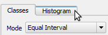

In the Style tab of the Layer properties dialog, click the Histogram tab.

Then, click Load values. In the histogram, you can check that most features are falling on one interval.
In the Classes tab, change the mode to Quantile (Equal Count).
Also, raise the number of Classes to 6.
Back in the Histogram tab, confirm that the values are spread trough all intervals.
Click OK to apply the changes and close the Layer properties dialog.